Lazy RPG 三輪美術審稿 v1
11 張 PNG 圖集，未改遊戲程式。點圖片可睇原尺寸。透明圖集可切換背景檢查。
清單及接圖注意 · 完整提示詞
round-1
七職業外形 — round-1/01-job-lineup.png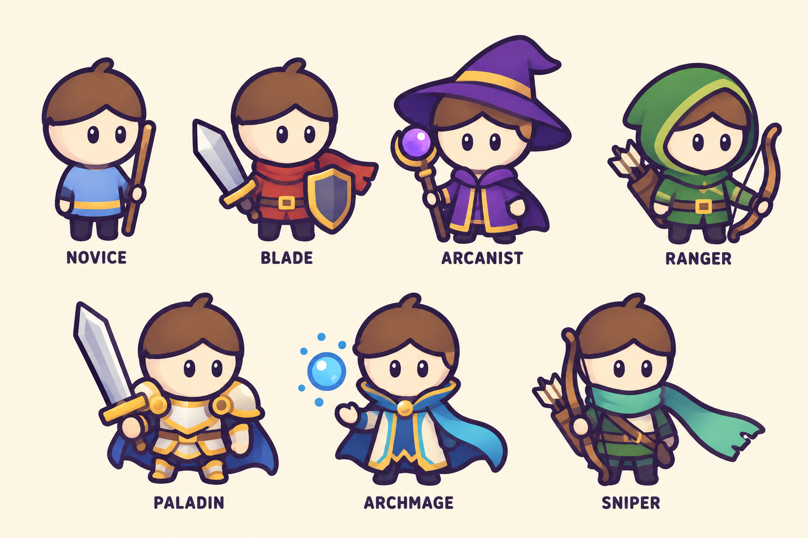
Menu bar 三種狀態 — round-1/02-menu-bar-states.png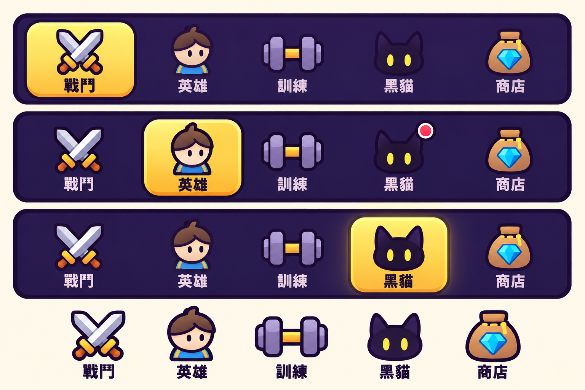
24 個主要圖示 — round-1/03-system-icons.png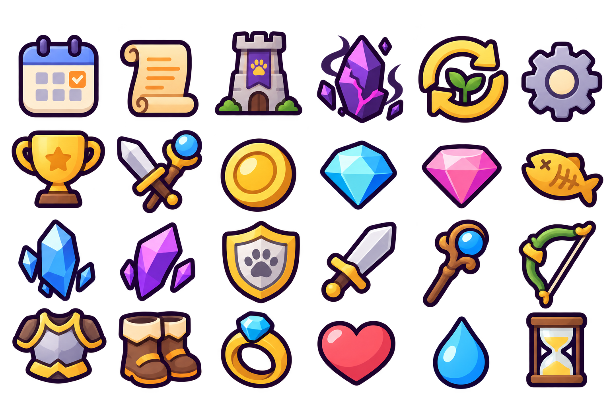
黑貓六狀態 — round-1/04-specialization-icons.png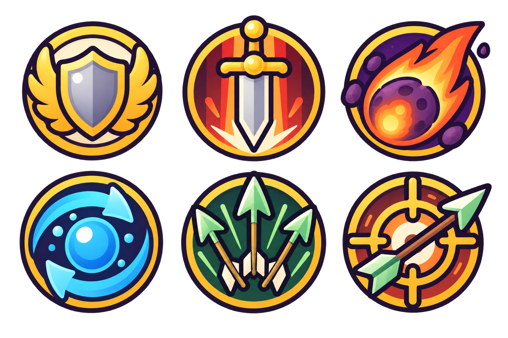
24 個補充圖示 — round-1/05-utility-and-equipment-icons.png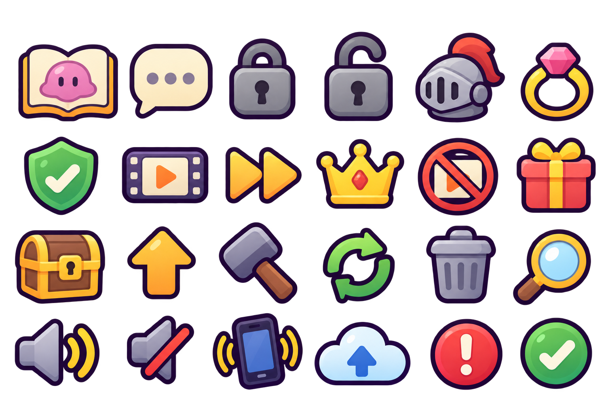
round-2
六專精徽記 — round-2/01-kuro-six-states.png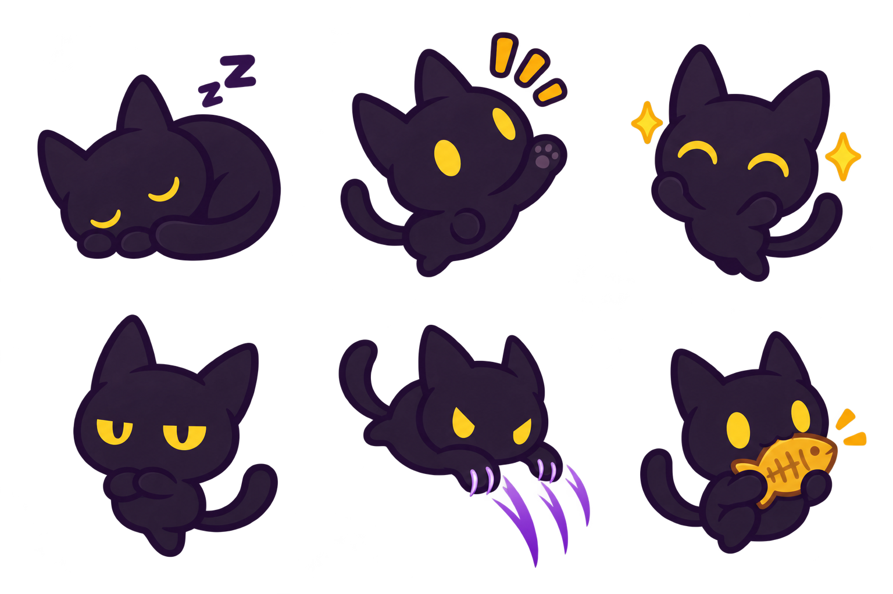
九戰鬥關鍵姿勢 — round-2/02-combat-action-board.png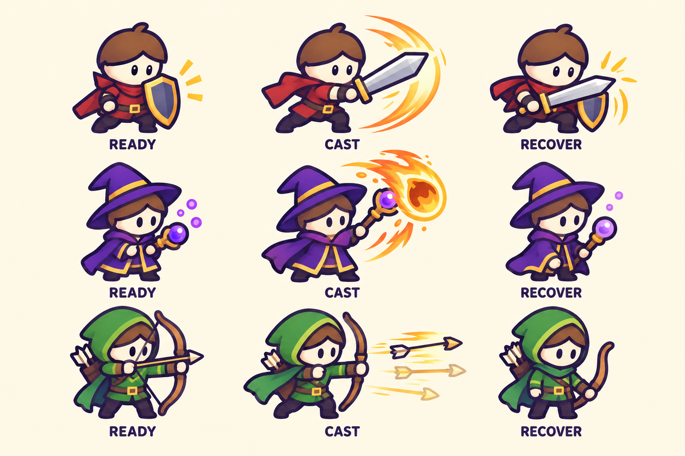
12 技能效果 — round-2/03-vfx-atlas.png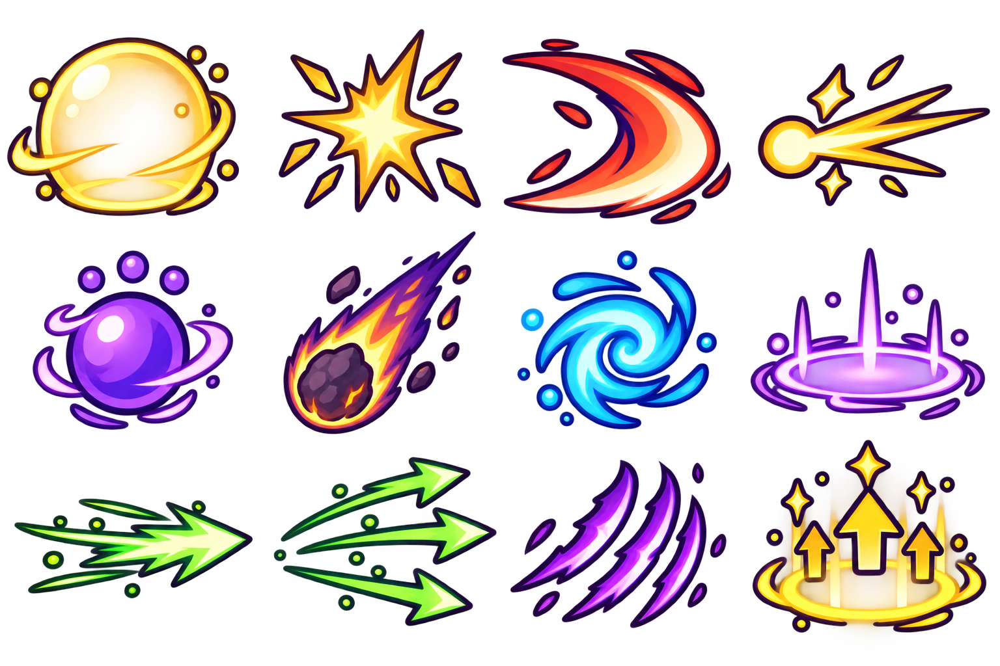
round-3
塔戰鬥背景 — round-3/01-tower-battle-background.png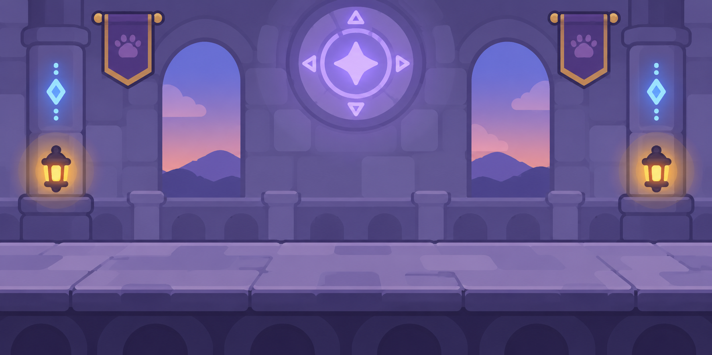
首章 Boss 及塔守衛 — round-3/02-guardians-and-first-boss.png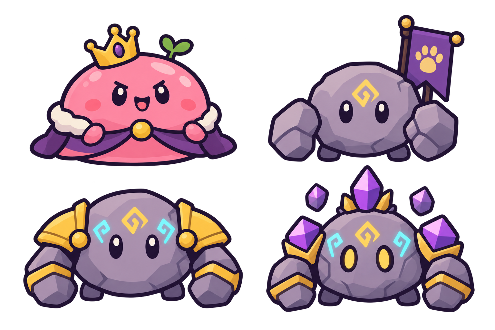
八成就章 — round-3/03-eight-achievement-badges.png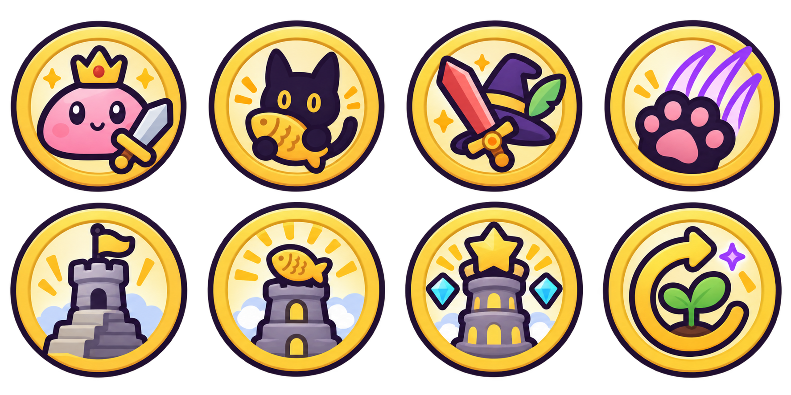